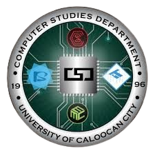

UCC
University of Caloocan City
University of Caloocan City
The Bachelor of Science in Computer Science (BSCS) program focuses on the theoretical foundations and advanced concepts of computing. It prepares students to design, develop, and analyze software systems and algorithms.
Emphasis on algorithms, data structures, programming languages, and computational theory to solve complex computing problems.
• Programming & Algorithms
• Data Structures
• Artificial Intelligence
• Software Engineering
• Machine Learning Basics
Logical thinking, problem-solving, software development, algorithmic design, and analytical skills.
• Software Engineer
• Systems Analyst
• Research Assistant
• AI / ML Associate
• Application Developer